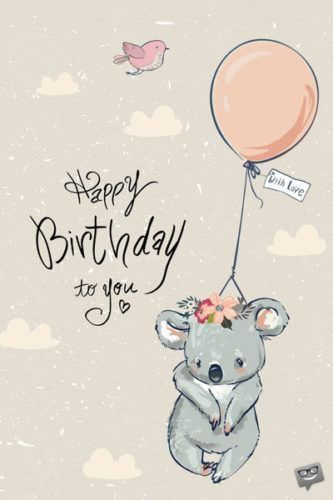

罗跑，生日快乐🎁
重要的事情说三遍：
生日快乐✨
生日快乐✨
生日快乐✨
总是把你的生日搞错🤦♀️
我也怪不好意思的😁
祝你天天开心，无忧无虑🎉
新的一岁，越来越棒，越来越好🎊
最后，祝你实习顺利🎶

好像那时候的我们没什么交情💭
我对你也没什么印象吧
估计你恐怕对我的印象不深
我猜你那时候应该看我不爽的
那个时候的我怕是自大自负还自以为是，哈哈哈哈哈

还记得有一个下午，我俩在QQ上聊天，然后我把我小时候的一些经历跟你讲了。
你跟我讲了很多，哈哈哈，现在想想，还是挺感谢你的。
应该是从那个时候起，我们就慢慢的开始成为好朋友了吧。
也是从那个时候起，我也开始慢慢的改变自己了。
那个时候的我，真的还是挺自负的，脾气还挺暴躁的。
不知不觉就毕业了。
那个时候，谁也不知道我们即将面临的是什么，我只记得那个时候我还是挺不舍的。
这么多年过去了，还是觉得那些年的日子最怀念。
那时候谁谁谁的绯闻，谁谁谁的绰号，谁谁谁的小秘密……
毕业了，一切都结束了。
希望我们天长地久，友谊长存👏
毕业⬇
最近过的好吗？
新的一岁，每天都要快乐，幸福！
我现在还记得，那次也是你生日，那次生日我应该是没记错的，不过，后面好像每天生日我都没搞对😅
不是提前了一天，就是推后了一天，还有甚者，过了好多天了😫
然后你说我是你的男闺蜜，还说我对你的事情那么上心，那一刻我真的觉得很开心。
我一直以为我是个外向的人，活越久，我越发现，我真的不外向。
我那个时候很多话讲是因为我真的是话痨，还有一个就是比较喜欢“装”，自己有了一点点成就，就能扯好远。
那个时候的我超级喜欢聊QQ，但是我没怎么找你聊过天，因为我对你真的有一丝害怕，我怕得之不易的“闺蜜”生气，或者厌烦，现在想想也是可笑。这也就是我之前很少找你聊天的原因了吧。
后面，我慢慢厌倦了在网络上聊天，QQ除了收通知，消息，另外没怎么用过了。
先解释下我为什么不怎么找你聊天的原因，其实我看到很多同学在聊的来，我真的还是挺羡慕的，但是我还是做不来。
也就这样，跟我联系的同学越来越少了。
没什么别的意思，我想到哪，就讲什么了😂
我突然发现，总是我的问题来找你倾诉，但是几乎没听你讲过你什么问题，有事情，别怕麻烦我，我可以做到的，我还是会去做的。
我真不是什么好鸟，大一你第一个生日我竟然完完全全忘记了😂
大学过的真的很快，希望你实习顺利，然后顺利找到工作！
也希望你早日找到你的另一半，然后永远幸福。
你别有了，然后一个人藏着，万一你没看准咋办，是吧😁
还有，希望我内向的性格不会影响我们的感情
剑未配妥，出门已是江湖。
过尽千帆，归来仍是少年。
20岁了，祝你幸福快乐！
讲句真话，我想讲的话，还有很多，特别是高中。 但是，我真的不想讲了，我也不知道为什么，或者没有为什么。
然后，这个网站模板我是copy的，虽然自己改了有，但是，实力有限，学前端的时间也短，暑假结束后开始学的。 还是没有达到我的预期的，也希望你不要介意，我copy模板，至少，我的心意真的是真的。
从三月份，我就开始想了，然后，这个月比较忙，我网课拉下了很多科，我一般都在家刷算法题，或者补课😂 所以今天还没完成，对不住了，迟到的祝福，希望你喜欢！
这个模板我会修改的，我会修改成我想要的样子，这个网址要是迁移了，我会告诉你的，不出意外的话，它会一直长存！嗯，然后就没了。
可能你觉得我前面讲了好多废话，我也知道，但是我还是想凑齐一个初中~大学🎈
最后祝你生日快乐啦🎁
今年就没礼物了，经济困难👀
最后一页有彩蛋！
还没研究出来，出来了告诉你~泪奔